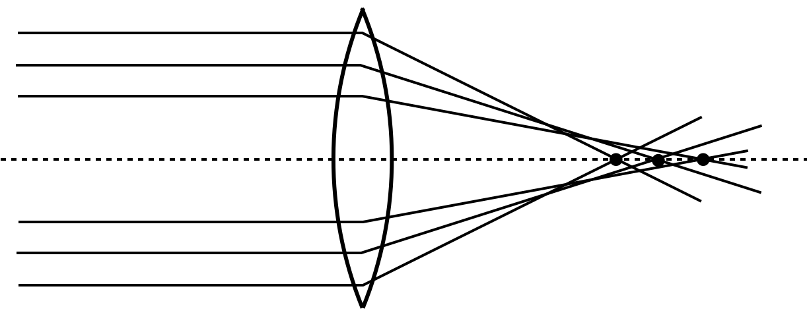
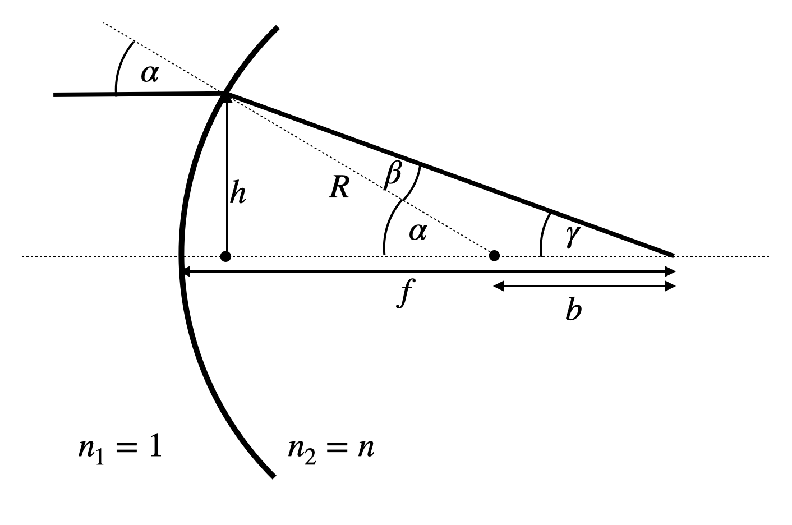
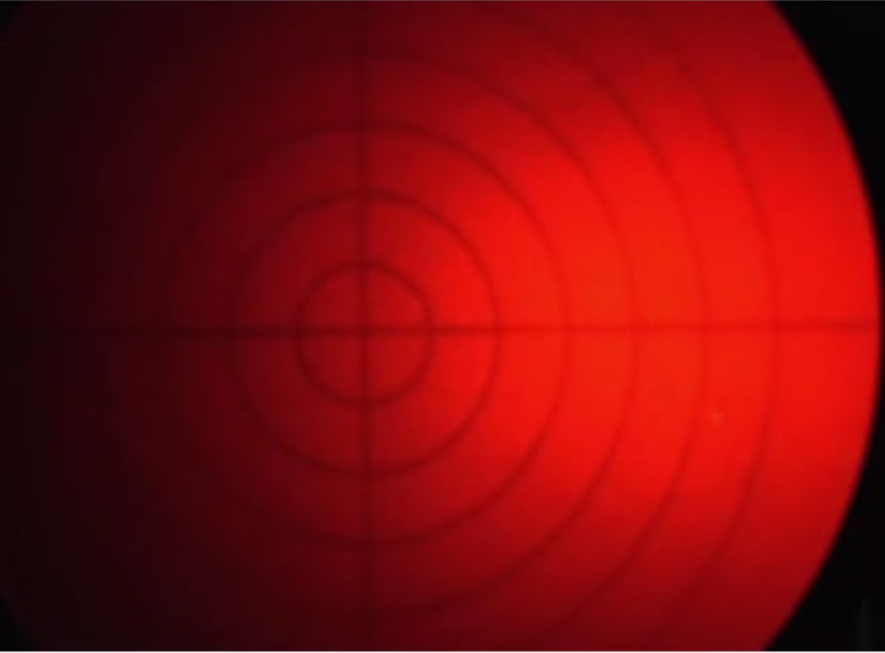

During our derivation of the imaging equation for lenses and the lens-maker equation we have been working under the paraxial approximation. This approximation stated, that all rays are close to the optical axis and therefore make only small angles with the surface normals of the curved surfaces of lenses (but also mirrors). If we violate this approximation, i.e. if we use rays, which are incident for from the optical axis or strongly inclined, then we end up with reflections and refraction which do not obey the imaging equation. In addition we have seen that light propagation for different colors is subject to different refractive indices (remember the prism). Thus we will induce aberrations, related to color. According to Seidel, aberration are classified the following way
chromatic aberration
spherical aberration
coma
astigmatism
field curvature
field distortion
Chromatic Aberration
Chromatic Aberration are based on the fact that light of different color has a different speed of propgation and thus also a different refractive index. We experienced that also for the prism, where it was useful to create a spectrograph. Here it is causing colored edges in you image, which you do not want.
As the refractive index for shorter wavelength is typically higher, we expect that the blue color has a shorter focal distance than the red color.
(a) Sketch
(b) Lecture
(c) Rendered
Figure 1— Chromatic aberration. Left: Sketch of the chromatic aberration, focusing red light less strong than blue. Middle: Image from the lecture. Right: Rendered image using the refractive index for BK7 glass.
Here is a plot for the variation of the focal distance of a lens with a radius of curvature of 100 mm as a function of the wavelength for three different glasses.
Code
bk7=pd.read_csv("data/BK7.csv",delimiter=",")sf10=pd.read_csv("data/SF10.csv",delimiter=",")fk51a=pd.read_csv("data/FK51A.csv",delimiter=",")wavelengths = bk7.wl*1000n_bk7 = bk7.nR =100# radius of curvature in mmy_max =50# max height of lensdef f(n,R):return1/(n-1)*R/2plt.figure(figsize=get_size(8,8))plt.plot(bk7.wl*1000, f(bk7.n,R),label="BK7")plt.plot(sf10.wl*1000, f(sf10.n,R),label="SF10")plt.plot(fk51a.wl*1000, f(fk51a.n,R),label="FK51a")plt.grid(True)plt.xlabel(r'wavelength $\lambda$ [nm]')plt.ylabel('focal distance f [mm]')plt.xlim(400,700)plt.legend()#plt.ylim(94,98)plt.show()
Focal distance of a Bk7, SF10 and FK51a lens with a radius of curvature of 100 mm as a function of the wavelength.
Such a chromatic aberrations may be corrected by using a system of two lenses as shown below.
Figure 2— Correction of chromatic aberration by a lens doublet with a convex and a a concave lens.
Chromatic aberration can be corrected by using an achromatic lens. Achromatic lenses are typically constructed by combining two lenses with different optical properties: a biconvex lens made of crown glass (lower dispersion) bonded to a biconcave lens made of flint glass (higher dispersion). This combination allows for the correction of chromatic aberration. Each lens \(i\) has a focal length according to the lensmaker equation:
\[
\frac{1}{f_i}=(n_i-1)\rho_i
\]
where \(\rho_i\) is given by:
\[
\rho_i=\frac{(R_{i2}-R_{i1})}{R_{i1}R_{i2}}
\]
For a system of two lenses in contact, the total refractive power is:
\[
\frac{1}{f}=(n_1-1)\rho_1+(n_2-1)\rho_2
\]
For color correction, we require equal focusing of red and blue light:
Substituting these into the color correction condition gives us the relationship between \(R_1\) and \(R_2\) needed for an achromatic doublet. Substituting the expressions for \(\rho_1\) and \(\rho_2\) into:
This equation determines the ratio of radii needed to achieve an achromatic doublet for the chosen glass materials.
Chromatic Aberration
An optical aberration caused by the wavelength-dependent refractive index of materials, resulting in different colors focusing at different distances from the lens, typically with blue light focusing closer to the lens than red light.
Spherical Aberration
The spherical abberation arises due to the fact that we have always considered a simplification of the angluar functions to their first order Taylor series expansion. If the angles of incidence on the spherical surfaces get to large, we cannot do that anymore and need to consider higher order corrections.
The result is that parallel rays which are far from the optical axis are not imaged into the same focal point as the paraxial rays, but to points closer to the lens. You might have all seen such effect also in the case of your empty coffee cup, when the sunlight enters and causes a so-called caustics. This pattern, you observe there is also the result of a soherical aberration. The image below shows the spherical aberration of a lens.

(a) Sketch
(b) Experimental
Figure 3— Spherical aberration. Left: Schematic illustration showing how parallel rays at different distances from the optical axis focus at different points. Right: Experimental demonstration from the lecture.
To be a bit more qauntitative, we would like to reconsider the refraction at a single spherical surface as depicted in the image below.

Figure 4— Spherical aberration: Theoretical ray tracing showing the focal point variation with incident ray height.
For spherical surfaces, we can derive a more accurate expression for the focal length using the following relations: \[\sin(\beta)=\frac{\sin(\alpha)}{n}, \quad \sin(\alpha)=\frac{h}{R}, \quad \alpha=\beta+\gamma\]
Using these relations, we obtain \(f=R+b\) and \(b=R\sin(\beta)/\sin(\gamma)\), which can be transformed into:
This result reveals that the focal length depends on the height \(h\) at which the ray is incident on the spherical surface, similar to the case of concave mirrors. The second term in the square brackets represents this height-dependent contribution, which reduces the focal length when \(h\neq 0\).
From these relations, we can derive an imaging equation for a single spherical surface:
This complex equation for a single surface demonstrates that the image is no longer formed on a plane; instead, its location depends on both \(R\) and \(h\). This height dependence for a single surface manifests in various image distortions, including field curvature.
Spherical Aberration
An optical aberration where rays passing through a lens at different distances from the optical axis focus at different points along the axis, with rays through the outer regions of the lens focusing closer to the lens than rays passing near the center.
Field Curvature
The field curvature is related to our calculations of the spherical abberation. We have seen there, that the focal distance depends on the height \(h\) of the rays over the optical axis. This means also means that the image plane is actually not anymore a plane but a curved surface as shown below. The rays incident from point \(A_0\) and \(A_1\) do not meet in the same plane. This plane is even different for meridional and saggital rays. This typically results in the fact, that you may have the center of the image in focus, but not the edges or vice versa.
(a) Sketch

(b) Experimental
Figure 5— Field curvature in optical systems. Left: Schematic diagram showing how a flat object plane is imaged onto a curved image surface (Petzval surface) rather than a flat image plane. This causes different regions of the image to focus at different distances from the lens. Right: Experimental demonstration showing how either the center or the edges of the image can be in focus, but not simultaneously, when using a flat detector. This aberration is particularly noticeable in wide-field imaging systems with simple lenses.
Field Curvature
An optical aberration where the image of a flat object is formed on a curved surface rather than a plane, causing the center and edges of the image field to not be simultaneously in focus on a flat detector or screen.
Coma
While our previous discussion focused on rays parallel to the optical axis at varying distances, significant aberrations also occur for rays emanating from off-axis object points (both at finite and infinite distances). One important example of such an aberration is “coma.”
In the case of coma, rays entering the lens at different heights with an angle to the optical axis do not converge to a single point in the image plane. Instead, they create a characteristic comet-shaped intensity distribution, where the light is asymmetrically distributed with a bright head and a diffuse tail pointing radially outward from the optical axis. This asymmetric distribution occurs because rays passing through different zones of the lens experience different effective magnifications, leading to the distinctive comet-like shape that gives this aberration its name.
The severity of coma typically increases with the distance from the optical axis and with larger apertures, making it particularly problematic in wide-field imaging systems or when using large-aperture optics.
(a) Sketch
(b) Experimental
Figure 6— Coma aberration in optical systems. Left: Schematic illustration showing how oblique rays entering the lens at different heights focus at different positions in the image plane, creating a characteristic comet-shaped blur (coma). The rays passing through different zones of the lens have different effective focal lengths and magnifications, resulting in the asymmetric image formation. Right: Experimental demonstration from the lecture showing the characteristic comet-like shape of the aberration, where the intensity distribution is asymmetric around the central image point.
Coma
An optical aberration where rays from an off-axis point source passing through different zones of a lens focus at different positions in the image plane, creating a characteristic comet-shaped intensity distribution with a bright head and a diffuse tail pointing radially outward.
Astigmatism
Astigmatism also occurs when imaging point sources located away from the optical axis. To understand this effect, we can analyze the rays from such a source by separating them into two categories:
Rays in the vertical (meridional) plane
Rays in the perpendicular (sagittal) plane
Analysis shows that meridional rays focus at a point closer to the lens compared to sagittal rays. This difference in focal positions creates a characteristic pattern in the image: when moving a screen through the focal region, the image of a point source transforms from a horizontal ellipse, through a circular point (at the circle of least confusion), to a vertical ellipse. This variation in image shape occurs because the focal surfaces for the meridional and sagittal rays are curved differently and intersect only at points along the optical axis.
The distance between these two focal surfaces increases with the distance from the optical axis, making astigmatism particularly noticeable for off-axis object points. This aberration is especially significant in systems where the object plane is not perpendicular to the optical axis or when using simple spherical lenses for wide-field imaging.
For an extended image as shown below, this results in the sperate focusing of vertical (left) and horizontal lines (right) in the image.
(a) Sketch
(b) Vertical Focus
(c) Horizontal Focus
Figure 7— Astigmatism in optical systems. Left: Schematic diagram illustrating how a tilted lens creates different focal planes for rays in different meridional planes. The tangential (vertical) and sagittal (horizontal) rays focus at different distances from the lens. Middle: Experimental image showing the focusing of vertical lines of a test object (letter “F”) at one focal position. Right: The same object at a different focal position where horizontal lines are in focus. This demonstrates how astigmatism causes different focal planes for vertical and horizontal features when a lens is tilted relative to the optical axis. The inability to focus both orientations simultaneously is a characteristic feature of astigmatic aberration.
This distortion, i.e. the elliptical shape of the focus has been used advatageously in single molecule microscopy to locate their position alsong the optical axis, which is typically a challenge for optical microscopy.
Astigmatism
An optical aberration where rays from an off-axis point source focusing in two perpendicular planes (meridional and sagittal) have different focal lengths, resulting in image points that appear as ellipses oriented either horizontally or vertically, depending on the observation plane.
Distortions
Barrel or cushion shaped distortions in the image are found when inserting apertures in the optical path. This results in the removal of certain ray path ending up in field distortions.
(a) Cushion Distortion
(b) Barrel Distortion
Figure 8— Geometric distortions in optical systems. Left: Cushion (or pincushion) distortion, where the magnification increases with distance from the optical axis, causing straight lines to bow inward and creating a cushion-like appearance. Right: Barrel distortion, where the magnification decreases with distance from the optical axis, causing straight lines to bow outward, resembling the shape of a barrel. These distortions maintain image sharpness but alter the geometric shape of the image, particularly noticeable in architectural photography or when imaging regular grid patterns.
Geometric distortions arise from the position of the aperture relative to the lens and its effect on ray paths. This mechanism can be understood by analyzing how different rays contribute to image formation:
When an aperture is placed behind the lens, rays that pass through create an image point \(M_1\) that is farther from the optical axis than the ideal image point \(M\) (where \(M\) is determined by the central ray from object point \(A_0\)). As the object point moves farther from the optical axis, the displacement between \(M_1\) and \(M\) increases proportionally. This progressive displacement transforms a regular grid pattern into a cushion (or pincushion) shape.
Conversely, when the aperture is placed in front of the lens, the opposite effect occurs. The rays that pass through the aperture create an image point closer to the optical axis than the ideal image point, resulting in barrel distortion. The magnitude of this displacement also increases with distance from the optical axis.
These theoretical predictions are confirmed by experimental observations, where:
A rear aperture produces cushion distortion, causing straight lines to bow inward
A front aperture produces barrel distortion, causing straight lines to bow outward
The severity of these distortions depends on both the aperture position and the distance of object points from the optical axis.
Figure 9— Cushion (left) and barrel (right) type of distortions.
Cushion Distortion
Cushion Distortion (also called Pincushion Distortion) - An optical aberration where straight lines appear to bow inward toward the center of the image, like the sides of a cushion or pincushion. This type of distortion is typically seen in telephoto lenses and makes the center of the image appear to be pinched inward.
Barrel Distortion
Barrel Distortion - An optical aberration where straight lines appear to bow outward from the center of the image, like a barrel shape. This type of distortion is common in wide-angle lenses and makes the center of the image appear to bulge outward.
Aberration Characterization and Zernike Polynomials
The Zernike polynomials are a set of orthonormal polynomials that are widely used in optics to describe wavefronts and to characterize optical aberrations. As we did not discuss wavefronts and waves yet, this is a more advanced topic here and only for information. Zernike polynomials are defined over the unit disk and are particularly useful because they are orthogonal under the inner product, which involves integration over the unit circle. This makes them suitable for decomposing a wavefront into a sum of orthogonal modes, each representing a different type of aberration.
The general form of the Zernike polynomials can be expressed in polar coordinates \((\rho, \phi)\), where \(\rho\) is the radial distance from the origin (normalized to the unit circle) and \(\phi\) is the azimuthal angle. The Zernike polynomials are defined as:
where \(n\) is a non-negative integer, \(m\) is an integer such that \(n - |m|\) is even and \(0 \leq |m| \leq n\), and \(R_n^m(\rho)\) is the radial polynomial given by:
The radial polynomials \(R_n^m(\rho)\) are only dependent on the radial distance \(\rho\), and they modulate the angular functions \(\cos(m\phi)\) and \(\sin(|m|\phi)\) that describe the azimuthal variation of the wavefront.
The Zernike polynomials are indexed in several ways, with one common method being the Noll index, which provides a single index \(j\) to each polynomial. Another method uses the pair \((n, m)\) to index the polynomials, where \(n\) indicates the order of the polynomial and \(m\) its azimuthal frequency.
These polynomials are particularly useful in optics and ophthalmology for describing the shape of optical wavefronts and the aberrations of optical systems, including the human eye. They allow for the decomposition of a complex wavefront into simpler, orthogonal components, each corresponding to a specific type of aberration, such as defocus, astigmatism, coma, etc.
The plots below visualize the Zernike Polynomials up to a certain order.
Code
def radial_polynomial(n, m, rho):""" Compute the radial component of the Zernike polynomial. """ R = np.zeros_like(rho)for k inrange((n -abs(m)) //2+1): R += ((-1)**k * sp.factorial(n - k) / (sp.factorial(k) * sp.factorial((n +abs(m)) //2- k) * sp.factorial((n -abs(m)) //2- k))) * rho**(n -2*k)return Rdef zernike_polynomial(n, m, rho, phi):""" Compute the Zernike polynomial. """if m >=0:return radial_polynomial(n, m, rho) * np.cos(m * phi)else:return radial_polynomial(n, -m, rho) * np.sin(-m * phi)x = np.linspace(-1, 1, 400)y = np.linspace(-1, 1, 400)xx, yy = np.meshgrid(x, y)rho = np.sqrt(xx**2+ yy**2)phi = np.arctan2(yy, xx)mask = rho >1rho[mask] = np.nanfig, axs = plt.subplots(3, 6, figsize=(8, 4))axs = axs.flatten()index =0for n inrange(6):for m inrange(-n, n+1, 2):if index >=len(axs):break Z = zernike_polynomial(n, m, rho, phi) Z[mask] = np.nan # Apply mask ax = axs[index] c = ax.imshow(Z, extent=(-1, 1, -1, 1), origin='lower') ax.set_title(f'n={n}, m={m}') ax.axis('off') index +=1plt.tight_layout()plt.show()